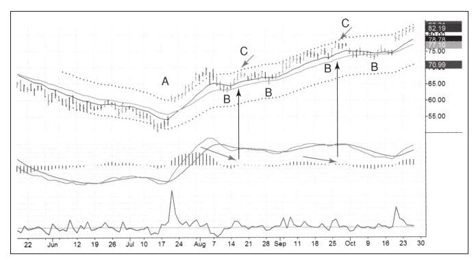

生活中我们经常开车，随着驾龄的增长你会特别在意汽车引擎的声音是否正常，如果在汽车加速时引擎声音很大，这时你可能会觉得不太正常而停车检查一下车况。噪音巨大、汽车动力减弱都可能是引擎出了问题。或许你很幸运没发现什么问题，只是树枝挂在底盘上或者其他无关紧要的问题，但有时候问题可能非常严重，不重视这个信号，将来就可能酿成严重车祸。
如往常一样按照计划展开一次交易，这次交易可能很顺利，但如果听到很大的“噪音”或者看到市场对你不利时就无需坚持，赶紧出局看看发生了什么事。不是每次交易都会到达计划目标位，你需要仔细“倾听”市场的“声音”。交易者需要关注市场正在发生什么，当怀疑走势时赶紧出场。
系统交易者和主观交易者在很多方面都有不同。对系统交易者而言止损坚如磐石，止盈和止损都依据系统给出的信号执行，系统交易者不需要成天看着行情；主观交易者却是不同的“玩法”，尽管也有盈利目标和止损，但如果市场给出有利信号，他们可能持有时间更长一些，反之可以立即出局。
在交易中改变策略对不同类型的交易者意义不同。我的那些做系统交易的朋友对交易中途改变策略的想法十分不适应，而主观交易的朋友却很乐意接受这种交易方式。主观交易者的心态是，我有计划没错，我有止损也没错，但我还有一个奢侈的选择：如果不喜欢目前市场的表现我可以收紧止损；如果喜欢市场表现我也可以继续持有头寸以获得更大的收益。
我们再复习一遍在哪些情况下主观交易者可以在交易中改变出场策略，我把这种情况称作“因交易噪音卖出”。入场时交易者预计价格会运动到相应位置，但如果中途发现市场出现异常就该先出场。另外，交易者还要明白，以这种方式出场需要大量的经验积累。如果你是个新手，在没有成为更有经验的交易者之前可以跳过本章。
股票变得沉闷时获利出局无可厚非，大不了重新买回就是。对正在进行的交易来说，只要对行情有所怀疑，也就是股票不再朝于己有利的方向运动就该先出场。很多交易书籍中都有衡量股票沉闷的指标，在接下来的案例中，我们使用MACD柱来评估市场的沉闷程度（见图6-1）。

历史走势图中的买入和卖出信号非常清晰，但越接近走势图的右侧，这些信号就越模糊。实时交易中很难识别出趋势和反转，在实时交易中指标的各个信号往往是矛盾的，但我们必须在这样的情况下做出决策。既然这样，那么这种情况对短期波段交易者有意义——在价值附近买入，价格高估时卖出。
如果你准备在价值附近买入并在价格高估时卖出，在正在进行的交易中，哪些情况会改变交易结果？明智的短线波段交易者如果看到MACD柱和价格发生顶背离他就会出场，而不是等待价格到达上轨。价格最终可能会到达目标位也可能不会，有意义的做法是落袋为安并在场外重新评估市场状况。背离之后价格往往会跌回到价值区，这时候又可能是重新建立多头的时机。
如果不喜欢目前市场的运行态势，你有两个选择：如果你是短线交易者，就结束这次交易，利润可能会比预期少，但可以寻找下一次机会；如果你是长线交易者，可能不想全部卖出，那么就部分获利了结并持有核心头寸，同时继续关注市场以寻求再买回来的机会。后一种交易方法让你在1美元的价格变动中获得超过1美元的收益。接下来我用实际交易案例来说明这两种方法。